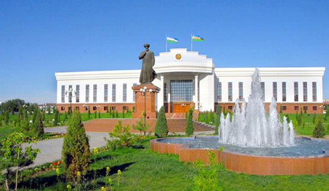

Qoraqalpogʻiston Viloyati
Qoraqalpogʻiston — Oʻzbekiston Respublikasi tarkibidagi parlament boshqaruv shakliga ega boʻlgan Suveren demokratik Respublika. Maydoni 166,6 ming km². Aholisi 2 mlnga yaqin (2022). Respublika poytaxti – Nukus shahri. Tarkibida 16 tuman, 12 shahar, 14 shaharcha va 124 fuqarolar yigʻini bor.Qoraqalpogʻiston – parlament boshqaruv shakliga ega boʻlgan O'zbekiston respublikasi tarkibidagi suveren demokratik respublikadir. Qonun chiqaruvchi oliy davlat vakolatli organi – koʻp partiyaviylik asosida 5 yil muddatga saylangan deputatlardan iborat Qoraqalpogʻiston hududi Joʻqorgʻi Kengeshi (QR JK). Qoraqalpogʻiston hududi Joʻqorgʻi Kengeshi raisi respublika rahbari hisoblanib, u Joʻqorgʻi Kengesh deputatlari orasidan 5 yil muddatga saylanadi (faqat ketma-ket 2 muddatdan oshmaydi). Davlat hokimiyatining oliy ijro etuvchi-boshqaruvchi organi Qoraqalpogʻiston Respublikasi Vazirlar Kengashi, yaʼni Qoraqalpogʻiston Respublikasi hukumati hisoblanadi. Qoraqalpogʻistonda Oʻzbekiston Respublikasi Konstitutsiyasi bilan bir vaqtda Qoraqalpogʻiston Oliy kengashining 1993-yil 9-apreldagi 12-chaqiriq 12-sessiyasida qabul qilingan Qoraqalpogʻiston Hududi Konstitutsiyasiga amal qilinadi. Qoraqalpogʻiston oʻz davlat ramzlari: gerb, madhiya va bayrogʻiga ega.[1]
Tabiati
Qoraqalpogʻiston Qizilqum choʻlining shimoli-gʻarbiy, Ustyurt platosining janubi-sharqiy qismi va Amudaryo deltasida joylashgan. Orol dengizining janubiy qismi Qoraqalpogʻiston hududida. Qizilqumning shimoli-gʻarbiy qismi Orol dengizi tomon pasayib boruvchi keng yassi tekislik boʻlib, qator tepa va qumli bar-xanlar (balandligi 75 m dan 100 m gacha) uchraydi. Alohida togʻ massivlari (eng, yirigi – Sulton Uvays togʻi, choʻqqilari 473 m va 485 m) bor. Sugʻoriladigan yerlar va sugʻorish kanallari, asosan, deltaning oʻng sohilida. Gʻarbida bir nechta botiqli (Borsakelmas, Asakaovdon botiqlarining balandligi 29–101 m) Ustyurt platosi joylashgan. Plato Orol dengizi va Amudaryo deltasiga tik yon bagʻirli jarlik – chinklar hosil qilib tushgan. Ustyurtdan janubi-sharqda Sariqamish soyligining shimoliy chekkasi joylashgan.
Foydali qazilmalardan osh tuzi va glauber tuzi, mineral xom ashyo hamda qurilish materiallari va boshqalar bor. Iqlimi keskin kontinental, yozi quruq va qishi nisbatan sovuq, qor kam yogʻadi. Yanvar oyining oʻrtacha temperaturasi janubda –4,9°, shimolida – 7,6°, iyulda janubida 28,2°, shimolida 26°. Yillik yogʻin 110 mm, asosan, qish va bahor oylarida yogʻadi. Vegetatsiya davri 194–214 kun. Eng yirik daryosi–Amudaryo (quyi oqimi). Amudaryo havzasi qadimdan sugʻoriladigan hudud sifatida maʼlum. Daryo suvidan sugʻorishda foydalaniladi. Nukus shahrida joylashgan suv xoʻjaligi boshqarmasi Taxiatosh gid-rouzeli, Qipchoq gidropostidan Orol dengizigacha boʻlgan (283 km) hududdagi daryoning barcha suv chiqarish inshootlarini nazorat qiladi. Oʻrta va yuqori oqimlarda daryo suvi sugʻorishga koʻp sarflanishi natijasida hozirgi Amudaryo Orol dengiziga bevosita quyilmaydi.
Qoraqalpogʻistonning eng yirik koʻli – Orol dengizi, shuningdek, Xoʻjakoʻl – Qora-jar koʻllar sistemasi bilan bogʻlangan Sudochye koʻl sistemasi hamda Orol dengizining qurib qolgan qismida tashkil etilgan sunʼiy suv havzalari ham mavjud. Soʻnggi 40 yil ichida Amudaryo va Sirdaryo havzalarida sugʻoriladigan yerlarning kengayishi natijasida Orol dengizi suv sathi 2005-yil boshida 23 m pasaydi. Qoraqalpogʻistonning barcha suv havzalaridan baliq ovlanadi, ularda baliq xoʻjaliklari tashkil etilgan.

Bosh sahifaga qaytish